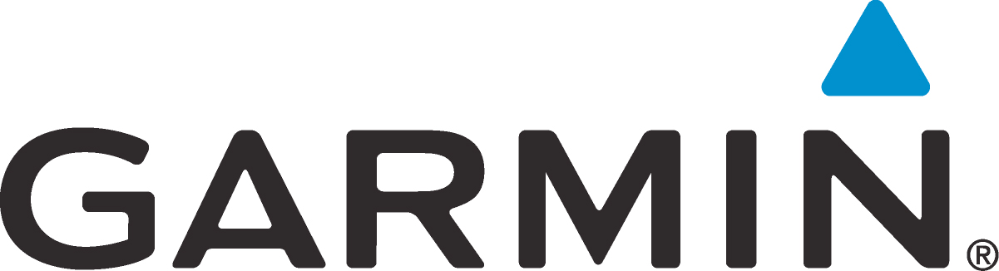

2019 - Present
I left Continental and started work at Garmin. I Garmin Foretrex 601 so I knew Garmin had GPS products but didn't realize they did anything in the automotive other than those personal navigation devices (PNDs) you can set up in your car. They work with some OEMs like Ford and putting the navigaiton in the infotainment system. I'm currently working the navigation application in one such infotainment systems. The application itself is based in QT and C++ with the user interface (UI) done in QML/Javascript. I dabbled in Javascript working on my personal project CityStreets and my personal website so had some familiarity. This was my first time working on UI tasks. It took time and a lot help to understand how QML worked and given user experience (UX) document and wireframes create soemthing the user can interact with.
Other than fixing defects and implementing some minor features, my main contribution has been working on a feature having to do with cloud based trips. A user can create trip on their phone and then the trip is downloaded to the navigation application in the car and shown in the UI. The user can modify the trip in the phone or navigation application and those updates are synchronized. Garmin's responsibility was receving the trip in the vehicle, showing it in the UI, and synchronizing changes made in the vehicle and on the phone. The feature was initially started by 2 developers but not fully completed before they left the company. I took the feature over and had to make quite a few changes. It took a long time to get cloud to vehicle testing working. This exposed defects in both how the trip data was process and the contents of the trip data sent to and from the vehicle. I used UML diagrams and flowcharts to document architecture changes so the customer would understand how our side was functioning. I work closely with the customer and was involved in vehicle test drives to ensure Garmin captured what the customer wanted done and what the users would like to see done with this feature. I learned the value of logging from Continental where the only way to get a sense of the state of the ECU was to view the logs. This was pivotal because this particular feature is testing in vehicles and logs may be the only things you have to troubleshoot issues.
I also act as the first person to process crashes--and soemtimes fix them--when we receive core dumps from the customer. One of the things I was happy about was getting the navigation applciation executable built with debug symbols and then having them stripped out. For some reason we weren't doing that and could only get the function name of where the crash occurred. This led to people causing on what the problematic code could be. Now, when we get a core dump file we can then take these symbols and get the line numbers of where the crash occurred. This wasn't the case before and I'm glad we have this now because root causing what caused a crash is much easier.